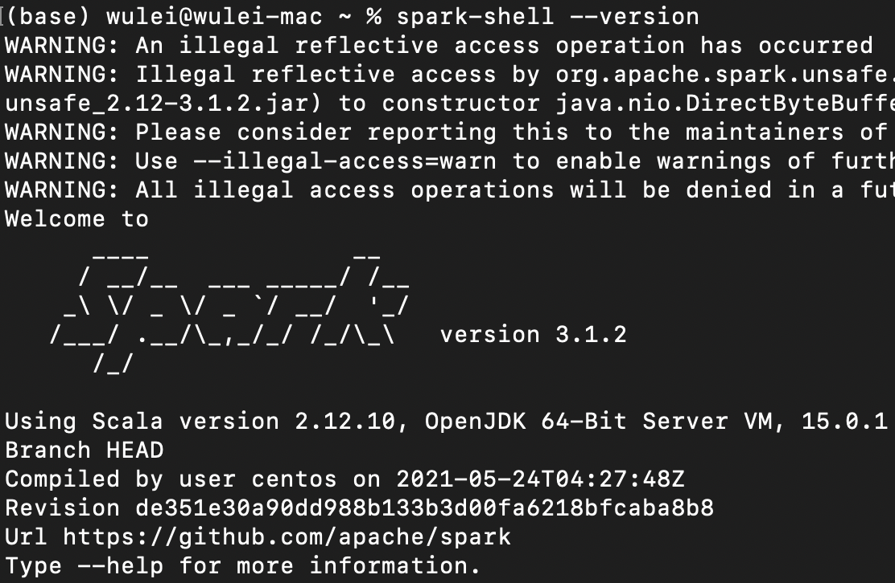
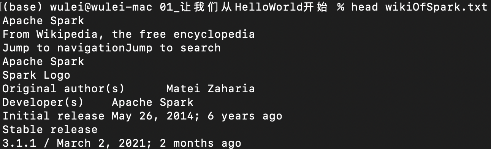
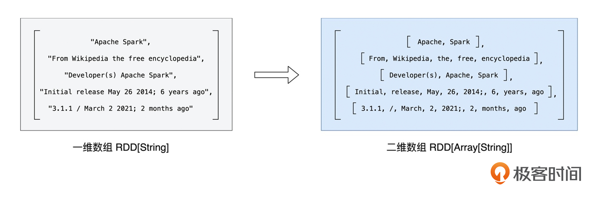
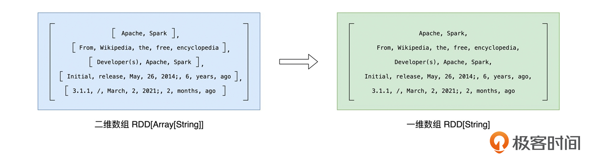
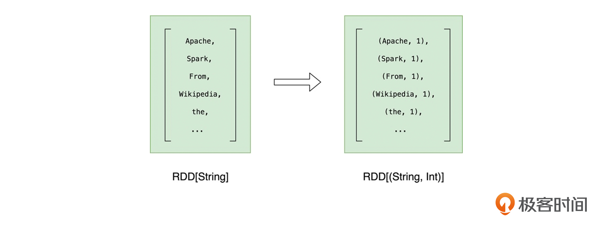
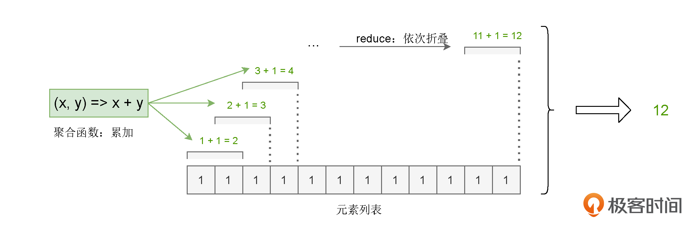
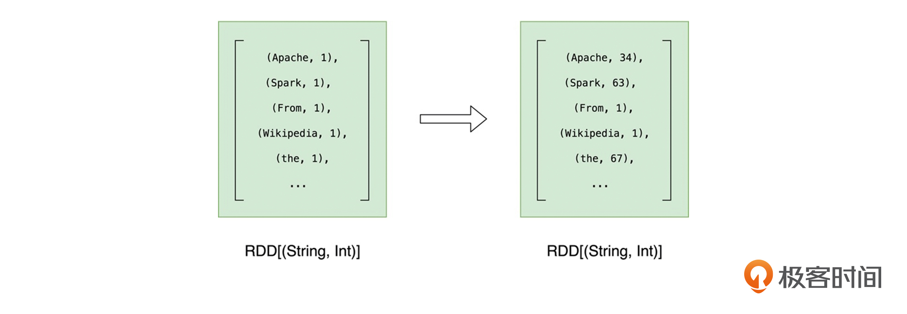
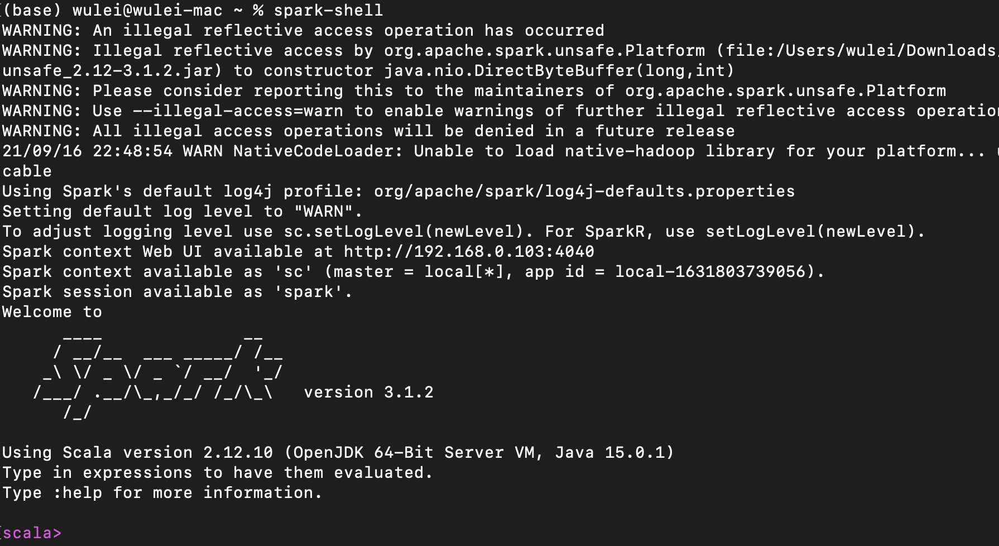
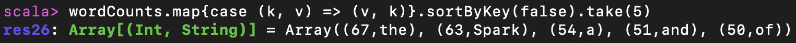

- 00 开篇词 入门Spark，你需要学会“三步走”.md.html
- 01 Spark：从“大数据的Hello World”开始.md.html
- 02 RDD与编程模型：延迟计算是怎么回事？.md.html
- 03 RDD常用算子（一）：RDD内部的数据转换.md.html
- 04 进程模型与分布式部署：分布式计算是怎么回事？.md.html
- 05 调度系统：如何把握分布式计算的精髓？.md.html
- 06 Shuffle管理：为什么Shuffle是性能瓶颈？.md.html
- 07 RDD常用算子（二）：Spark如何实现数据聚合？.md.html
- 08 内存管理：Spark如何使用内存？.md.html
- 09 RDD常用算子（三）：数据的准备、重分布与持久化.md.html
- 10 广播变量 & 累加器：共享变量是用来做什么的？.md.html
- 11 存储系统：数据到底都存哪儿了？.md.html
- 12 基础配置详解：哪些参数会影响应用程序稳定性？.md.html
- 13 Spark SQL：让我们从“小汽车摇号分析”开始.md.html
- 14 台前幕后：DataFrame与Spark SQL的由来.md.html
- 15 数据源与数据格式：DataFrame从何而来？.md.html
- 16 数据转换：如何在DataFrame之上做数据处理？.md.html
- 17 数据关联：不同的关联形式与实现机制该怎么选？.md.html
- 18 数据关联优化：都有哪些Join策略，开发者该如何取舍？.md.html
- 19 配置项详解：哪些参数会影响应用程序执行性能？.md.html
- 20 Hive + Spark强强联合：分布式数仓的不二之选.md.html
- 21 Spark UI（上）：如何高效地定位性能问题？.md.html
- 22 Spark UI（下）：如何高效地定位性能问题？.md.html
- 23 Spark MLlib：从“房价预测”开始.md.html
- 24 特征工程（上）：有哪些常用的特征处理函数？.md.html
- 25 特征工程（下）：有哪些常用的特征处理函数？.md.html
- 26 模型训练（上）：决策树系列算法详解.md.html
- 27 模型训练（中）：回归、分类和聚类算法详解.md.html
- 28 模型训练（下）：协同过滤与频繁项集算法详解.md.html
- 29 Spark MLlib Pipeline：高效开发机器学习应用.md.html
- 30 Structured Streaming：从“流动的Word Count”开始.md.html
- 31 新一代流处理框架：Batch mode和Continuous mode哪家强？.md.html
- 32 Window操作&Watermark：流处理引擎提供了哪些优秀机制？.md.html
- 33 流计算中的数据关联：流与流、流与批.md.html
- 34 Spark + Kafka：流计算中的“万金油”.md.html
- 用户故事 小王：保持空杯心态，不做井底之蛙.md.html
- 结束语 进入时间裂缝，持续学习.md.html
- 捐赠
01 Spark：从“大数据的Hello World”开始
你好，我是吴磊。
从这节课开始，我们先来学习Spark的“基础知识”模块，对Spark的概念和核心原理先做一个整体的了解。我并不会从RDD、DAG这些基本概念给你讲起。坦白地说，这些抽象的概念枯燥而又乏味，对于刚开始接触Spark的你来说，很难学进去。因此，我们不妨反其道而行之，先从实战入手，用一个小例子来直观地认识Spark，看看Spark都能做些什么。
这就好比我们学习一门新的编程语言，往往都是从“Hello World”开始。我还记得，刚刚学编程那会，屏幕上打印出的“Hello World”，足足让我兴奋了一整天，让我莫名地有一种“I can change the world”的冲动。
今天这一讲，我们就从“大数据的Hello World”开始，去学习怎么在Spark之上做应用开发。不过，“大数据的Hello World”并不是把字符串打印到屏幕上这么简单，而是要先对文件中的单词做统计计数，然后再打印出频次最高的5个单词，江湖人称“Word Count”。
之所以会选择Word Count，作为我们迈入Spark门槛的第一个项目，主要有两个原因，一是Word Count场景比较简单、容易理解；二是Word Count麻雀虽小，但五脏俱全，一个小小的Word Count，就能够牵引出Spark许多的核心原理，帮助我们快速入门。
好啦，话不多说，下面我们正式开启Word Count之旅。
准备工作
巧妇难为无米之炊，要做Word Count，我们得先把源文件准备好。
咱们做Word Count的初衷是学习Spark，因此源文件的内容无足轻重。这里我提取了Wikipedia中对Spark的介绍来做我们的源文件。我把它保存到了与课程配套的GitHub项目中，并把它命名为“wikiOfSpark.txt”。你可以从这里下载它。
为了跑通Word Count实例，我们还需要在本地（Local）部署Spark运行环境。这里的“本地”，指的是你手头能够获取到的任何计算资源，比如服务器、台式机，或是笔记本电脑。
在本地部署Spark运行环境非常简单，即便你从来没有和Spark打过交道，也不必担心。只需要下面这3个步骤，我们就可以完成Spark的本地部署了。
- 下载安装包：从Spark官网下载安装包，选择最新的预编译版本即可；
- 解压：解压Spark安装包到任意本地目录；
- 配置：将“${解压目录}/bin”配置到PATH环境变量。
我这里给你准备了一个本地部署的小视频，你可以直观地感受一下。
接下来，我们确认一下Spark是否部署成功。打开命令行终端，敲入“spark-shell –version”命令，如果该命令能成功地打印出Spark版本号，就表示我们大功告成了，就像这样：

在后续的实战中，我们会用spark-shell来演示Word Count的执行过程。spark-shell是提交Spark作业众多方式中的一种，我们在后续的课程中还会展开介绍，这里你不妨暂时把它当做是Spark中的Linux shell。spark-shell提供交互式的运行环境（REPL，Read-Evaluate-Print-Loop），以“所见即所得”的方式，让开发者在提交源代码之后，就可以迅速地获取执行结果。
不过，需要注意的是，spark-shell在运行的时候，依赖于Java和Scala语言环境。因此，为了保证spark-shell的成功启动，你需要在本地预装Java与Scala。好消息是，关于Java与Scala的安装，网上的资料非常丰富，你可以参考那些资料来进行安装，咱们在本讲就不再赘述Java与Scala的安装步骤啦。
梳理Word Count的计算步骤
做了一番准备之后，接下来，我们就可以开始写代码了。不过，在“下手”之前，咱们不妨一起梳理下Word Count的计算步骤，先做到心中有数，然后再垒代码也不迟。
之前我们提到，Word Count的初衷是对文件中的单词做统计计数，打印出频次最高的5个词汇。那么Word Count的第一步就很明显了，当然是得读取文件的内容，不然咱们统计什么呢？
我们准备好的文件是wikiOfSpark.txt，它以纯文本的方式记录了关于Spark的简单介绍，我摘取了其中的部分内容给你看一下：

我们知道，文件的读取往往是以行（Line）为单位的。不难发现，wikiOfSpark.txt的每一行都包含多个单词。
我们要是以“单词”作为粒度做计数，就需要对每一行的文本做分词。分词过后，文件中的每一句话，都被打散成了一个个单词。这样一来，我们就可以按照单词做分组计数了。这就是Word Count的计算过程，主要包含如下3个步骤：
- 读取内容：调用Spark文件读取API，加载wikiOfSpark.txt文件内容；
- 分词：以行为单位，把句子打散为单词；
- 分组计数：按照单词做分组计数。
明确了计算步骤后，接下来我们就可以调用Spark开发API，对这些步骤进行代码实现，从而完成Word Count的应用开发。
众所周知，Spark支持种类丰富的开发语言，如Scala、Java、Python，等等。你可以结合个人偏好和开发习惯，任意选择其中的一种进行开发。尽管不同语言的开发API在语法上有着细微的差异，但不论是功能方面、还是性能方面，Spark对于每一种语言的支持都是一致的。换句话说，同样是Word Count，你用Scala实现也行，用Python实现也可以，两份代码的执行结果是一致的。不仅如此，在同样的计算资源下，两份代码的执行效率也是一样的。
因此，就Word Count这个示例来说，开发语言不是重点，我们不妨选择Scala。你可能会说：“我本来对Spark就不熟，更没有接触过Scala，一上来就用Scala演示Spark应用代码，理解起来会不会很困难？”
其实大可不必担心，Scala语法比较简洁，Word Count的Scala实现不超过10行代码。再者，对于Word Count中的每一行Scala代码，我会带着你手把手、逐行地进行讲解和分析。我相信，跟着我过完一遍代码之后，你能很快地把它“翻译”成你熟悉的语言，比如Java或Python。另外，绝大多数的Spark 源码都是由 Scala 实现的，接触并了解一些Scala的基本语法，有利于你后续阅读、学习Spark源代码。
Word Count代码实现
选定了语言，接下来，我们就按照读取内容、分词、分组计数这三步来看看Word Count具体怎么实现。
第一步，读取内容
首先，我们调用SparkContext的textFile方法，读取源文件，也就是wikiOfSpark.txt，代码如下表所示：
import org.apache.spark.rdd.RDD
// 这里的下划线"_"是占位符，代表数据文件的根目录
val rootPath: String = _
val file: String = s"${rootPath}/wikiOfSpark.txt"
// 读取文件内容
val lineRDD: RDD[String] = spark.sparkContext.textFile(file)
在这段代码中，你可能会发现3个新概念，分别是spark、sparkContext和RDD。
其中，spark和sparkContext分别是两种不同的开发入口实例：
- spark是开发入口SparkSession实例（Instance），SparkSession在spark-shell中会由系统自动创建；
- sparkContext是开发入口SparkContext实例。
在Spark版本演进的过程中，从2.0版本开始，SparkSession取代了SparkContext，成为统一的开发入口。换句话说，要开发Spark应用，你必须先创建SparkSession。关于SparkSession和SparkContext，我会在后续的课程做更详细的介绍，这里你只要记住它们是必需的开发入口就可以了。
我们再来看看RDD，RDD的全称是Resilient Distributed Dataset，意思是“弹性分布式数据集”。RDD是Spark对于分布式数据的统一抽象，它定义了一系列分布式数据的基本属性与处理方法。关于RDD的定义、内涵与作用，我们留到[下一讲]再去展开。
在这里，你不妨先简单地把RDD理解成“数组”，比如代码中的lineRDD变量，它的类型是RDD[String]，你可以暂时把它当成元素类型是String的数组，数组的每个元素都是文件中的一行字符串。
获取到文件内容之后，下一步我们就要做分词了。
第二步，分词
“分词”就是把“数组”的行元素打散为单词。要实现这一点，我们可以调用RDD的flatMap方法来完成。flatMap操作在逻辑上可以分成两个步骤：映射和展平。
这两个步骤是什么意思呢？我们还是结合Word Count的例子来看：
// 以行为单位做分词
val wordRDD: RDD[String] = lineRDD.flatMap(line => line.split(" "))
要把lineRDD的行元素转换为单词，我们得先用分隔符对每个行元素进行分割（Split），咱们这里的分隔符是空格。
分割之后，每个行元素就都变成了单词数组，元素类型也从String变成了Array[String]，像这样以元素为单位进行转换的操作，统一称作“映射”。
映射过后，RDD类型由原来的RDD[String]变为RDD[Array[String]]。如果把RDD[String]看成是“数组”的话，那么RDD[Array[String]]就是一个“二维数组”，它的每一个元素都是单词。

为了后续对单词做分组，我们还需要对这个“二维数组”做展平，也就是去掉内层的嵌套结构，把“二维数组”还原成“一维数组”，如下图所示。

就这样，在flatMap算子的作用下，原来以行为元素的lineRDD，转换成了以单词为元素的wordRDD。
不过，值得注意的是，我们用“空格”去分割句子，有可能会产生空字符串。所以，在完成“映射”和“展平”之后，对于这样的“单词”，我们要把其中的空字符串都过滤掉，这里我们调用RDD的filter方法来过滤：
// 过滤掉空字符串
val cleanWordRDD: RDD[String] = wordRDD.filter(word => !word.equals(""))
这样一来，我们在分词阶段就得到了过滤掉空字符串之后的单词“数组”，类型是RDD[String]。接下来，我们就可以准备做分组计数了。
第三步，分组计数
在RDD的开发框架下，聚合类操作，如计数、求和、求均值，需要依赖键值对（Key Value Pair）类型的数据元素，也就是（Key，Value）形式的“数组”元素。
因此，在调用聚合算子做分组计数之前，我们要先把RDD元素转换为（Key，Value）的形式，也就是把RDD[String]映射成RDD[(String, Int)]。
其中，我们统一把所有的Value置为1。这样一来，对于同一个的单词，在后续的计数运算中，我们只要对Value做累加即可，就像这样：

下面是对应的代码：
// 把RDD元素转换为（Key，Value）的形式
val kvRDD: RDD[(String, Int)] = cleanWordRDD.map(word => (word, 1))
这样一来，RDD就由原来存储String元素的cleanWordRDD，转换为了存储（String，Int）的kvRDD。
完成了形式的转换之后，我们就该正式做分组计数了。分组计数其实是两个步骤，也就是先“分组”，再“计数”。下面，我们使用聚合算子reduceByKey来同时完成分组和计数这两个操作。
对于kvRDD这个键值对“数组”，reduceByKey先是按照Key（也就是单词）来做分组，分组之后，每个单词都有一个与之对应的Value列表。然后根据用户提供的聚合函数，对同一个Key的所有Value做reduce运算。
这里的reduce，你可以理解成是一种计算步骤或是一种计算方法。当我们给定聚合函数后，它会用折叠的方式，把包含多个元素的列表转换为单个元素值，从而统计出不同元素的数量。
在Word Count的示例中，我们调用reduceByKey实现分组计算的代码如下：
// 按照单词做分组计数
val wordCounts: RDD[(String, Int)] = kvRDD.reduceByKey((x, y) => x + y)
可以看到，我们传递给reduceByKey算子的聚合函数是(x, y) => x + y，也就是累加函数。因此，在每个单词分组之后，reduce会使用累加函数，依次折叠计算Value列表中的所有元素，最终把元素列表转换为单词的频次。对于任意一个单词来说，reduce的计算过程都是一样的，如下图所示。

reduceByKey完成计算之后，我们得到的依然是类型为RDD[(String, Int)]的RDD。不过，与kvRDD不同，wordCounts元素的Value值，记录的是每个单词的统计词频。到此为止，我们就完成了Word Count主逻辑的开发与实现。

在程序的最后，我们还要把wordCounts按照词频做排序，并把词频最高的5个单词打印到屏幕上，代码如下所示。
// 打印词频最高的5个词汇
wordCounts.map{case (k, v) => (v, k)}.sortByKey(false).take(5)
代码执行
应用开发完成之后，我们就可以把代码丢进已经准备好的本地Spark部署环境里啦。首先，我们打开命令行终端（Terminal），敲入“spark-shell”，打开交互式运行环境，如下图所示。

然后，把我们开发好的代码，依次敲入spark-shell。为了方便你操作，我把完整的代码实现整理到下面了：
import org.apache.spark.rdd.RDD
// 这里的下划线"_"是占位符，代表数据文件的根目录
val rootPath: String = _
val file: String = s"${rootPath}/wikiOfSpark.txt"
// 读取文件内容
val lineRDD: RDD[String] = spark.sparkContext.textFile(file)
// 以行为单位做分词
val wordRDD: RDD[String] = lineRDD.flatMap(line => line.split(" "))
val cleanWordRDD: RDD[String] = wordRDD.filter(word => !word.equals(""))
// 把RDD元素转换为（Key，Value）的形式
val kvRDD: RDD[(String, Int)] = cleanWordRDD.map(word => (word, 1))
// 按照单词做分组计数
val wordCounts: RDD[(String, Int)] = kvRDD.reduceByKey((x, y) => x + y)
// 打印词频最高的5个词汇
wordCounts.map{case (k, v) => (v, k)}.sortByKey(false).take(5)
我们把上面的代码依次敲入到spark-shell之后，spark-shell最终会把词频最高的5个单词打印到屏幕上：

在Wikipedia的Spark介绍文本中，词频最高的单词分别是the、Spark、a、and和of，除了“Spark”之外，其他4个单词都是常用的停用词（Stop Word），因此它们几个高居榜首也就不足为怪了。
好啦，到此为止，我们在Spark之上，完成了“大数据领域Hello World”的开发与实现，恭喜你跨入大数据开发的大门！
重点回顾
今天这一讲，我们围绕着Word Count，初步探索并体验了Spark应用开发。你首先需要掌握的是Spark的本地部署，从而可以通过spark-shell来迅速熟悉Spark，获得对Spark的“第一印象”。要在本地部署Spark，你需要遵循3个步骤：
- 从Spark官网下载安装包，选择最新的预编译版本即可；
- 解压Spark安装包到任意本地目录；
- 将“${解压目录}/bin”配置到PATH环境变量。
然后，我们一起分析并实现了入门Spark的第一个应用程序：Word Count。在我们的例子中，Word Count要完成的计算任务，是先对文件中的单词做统计计数，然后再打印出频次最高的5个单词。它的实现过程分为3个步骤：
- 读取内容：调用Spark文件读取API，加载wikiOfSpark.txt文件内容；
- 分词：以行为单位，把句子打散为单词；
- 分组计数：按照单词做分组计数。
也许你对RDD API还不熟悉，甚至从未接触过Scala，不过没关系，完成了这次“大数据的Hello World”开发之旅，你就已经踏上了新的征程。在接下来的课程里，让我们携手并肩，像探索新大陆一样，一层一层地剥开Spark的神秘面纱，加油！
每课一练
在Word Count的代码实现中，我们用到了多种多样的RDD算子，如map、filter、flatMap和reduceByKey，除了这些算子以外，你知道还有哪些常用的RDD算子吗？（提示，可以结合官网去查找）。
另外，你能说说，以上这些算子都有哪些共性或是共同点吗？
欢迎你把答案分享到评论区，我在评论区等你。
如果这一讲对你有帮助，也欢迎你分享给自己的朋友，我们下一讲再见！
© 2019 - 2023 Liangliang Lee. Powered by gin and hexo-theme-book.